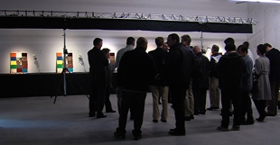

More than 200 lighting leaders from across North America gathered in Portland, OR, November 12–14, 2013, for the eighth annual Solid-State Lighting (SSL) Market Introduction Workshop, hosted by DOE. The diverse audience spanned the spectrum: industry, government, efficiency organizations, utilities, municipalities, designers, specifiers, retailers, and distributors. The purpose was to share the latest insights, updates, and strategies for the successful market introduction of high-quality solid-state lighting products.
Pre-Conference Educational Sessions
The two-day workshop began on November 13 but was preceded on November 12 by an optional half-day of free educational sessions for lighting professionals and newcomers looking to better understand the complexities of LED lighting. More than 135 people attended these educational sessions, which ranged in topic from the current status of SSL technology and products, to the use of LED light sources with controls, to how SSL poses new challenges for facility managers, to understanding color quality and metrics. The afternoon culminated in a "stump the chumps" session in which attendees had an opportunity to ask a panel of DOE and industry experts tough questions about LED lighting.
The educational sessions were followed by an optional evening bus tour to Pacific Northwest National Laboratory's (PNNL) demonstration space for commercial lighting products. At the site, Naomi Miller and Tracey Beeson guided attendees through a simulated office space featuring 20 2'x4' troffers equipped with LED T8 lamps that had narrow, medium, wide, and 360-degree beam angles. Michael Royer demonstrated 27 PAR38 LED and halogen lamps set up side-by-side, projecting the lamps onto mockup displays, switching from spots to narrow floods to floods to illustrate color, beam, and shadow quality and recounting how industry experts rated the lamps on those same parameters.
The Question of Cost-Effectiveness
On November 13, DOE SSL Portfolio Manager James Brodrick kicked off Day 1 of the workshop by noting how far the technology has come since DOE hosted its first SSL Market Introduction Workshop, which was held in 2006. Back then, he noted, some LED lighting products looked a bit strange, and their performance left a lot to be desired, whereas today they're available for almost every lighting application and have reached a market share of more than 4 percent, thanks to new lamp standards, greater awareness of efficient lighting choices, a greater number of utility programs promoting them, and leadership and investments from the DOE SSL program. Brodrick emphasized the importance of the attendees' feedback in helping DOE tailor its program to maximize market penetration and energy savings.
A panel discussion on cost-effectiveness from the utility perspective followed, moderated by Marc Ledbetter of PNNL. His PNNL colleague Jason Tuenge reviewed a new DOE report, SSL Pricing and Efficacy Trend Analysis for Utility Program Planning, which was created in response to requests from utilities and energy-efficiency organizations for information to help them forecast the order in which important SSL applications will become cost-effective and estimate when each "tipping point" will be reached. Projected average efficacies of LED lighting products are below DOE's 2017 targets, but leading products might still reach these goals on or ahead of schedule. LED lamp $/klm pricing is expected to decrease roughly 55 percent by 2017, relative to current pricing. A more modest decrease of 30 percent is projected for LED luminaires over this same period.
Charlie Grist of the Northwest Power and Conservation Council discussed the challenges SSL poses for utilities. Noting that fracking and renewable portfolio standards are two trends that are bringing down wholesale power market prices dramatically, he explained that energy-efficiency measures now have to be even lower-cost, because the baseline they're compared against has dropped in cost. For illustration purposes, Grist cited the savings and cost-effectiveness of LED lamps in residential applications, observing that at 2013 estimates, most were cost-effective from a total resource cost (TRC) perspective. He predicted that SSL product quality will be an important issue.
John Delany of Commonwealth Edison remarked on how quickly LED lighting is becoming a significant part of the portfolios of many utilities and energy-efficiency programs. He observed that in his organization's commercial and industrial midstream program, SSL incentives skyrocketed from 60,000 lamps in the program year ending May 31, 2012 (yielding a 2 percent gross load reduction), to 215,000 lamps one year later (yielding a gross load reduction of 27 percent) – and are projected to jump to 325,000 lamps for the current program year, representing 41 percent of gross load reduction. Delany said it's very difficult for utilities to put together a long-term, comprehensive lighting strategy because "the bar is constantly moving, so it continues to be a challenge."
The next panel, which was moderated by Kelly Gordon of PNNL, considered cost-effectiveness from the buyer/user perspective. Alison Erlenbach of the Bay Area Climate Collaborative recounted her experiences with three of the cities she's worked with to assess the affordability of LED street lighting projects. She emphasized that it's not just about numbers, and that light quality and safety also carry a lot of weight. Erlenbach stressed the importance of providing cities with up-to-date information, and of knowing their needs and drivers. She noted that it's often more affordable to do a full comprehensive streetlight conversion project than to only convert a small portion, and pointed out that waiting costs money – not only because it entails paying higher energy and maintenance costs, but also because financing affects affordability, and financing rates are low right now but may not stay low. "The time to act is now," Erlenbach said.
Denise Fong of Candela Lighting Design and Consulting talked about the process of determining whether to use SSL in the design phase of a project, using as an example a Seattle office building/laboratory that was still under construction. She noted that because of Seattle's strict energy codes, a certain amount of lighting controls are required, and that SSL's controllability plays very nicely into that. Fong said that the cost of an LED lighting system worked out to be only 31 cents/square foot more than the cost of a fluorescent system, with that figure rising to as much as $1.70/square foot if the LEDs were to be compatible with specific controls. She explained that on a project of that size, the additional cost for SSL is not a big factor, and said the Seattle client opted for LEDs compatible with sophisticated controls that the contractor was familiar with.
Chris Magee of MGM Resorts International described how his company is proceeding with LED conversions in a wide range of lighting applications – from hotel rooms, to garages, to restrooms, to casinos, to slot machines – which is resulting in substantial energy savings in addition to other benefits. Those benefits include reduced maintenance from no longer needing to replace light bulbs on a regular basis, a reduction in central plant cooling demand, and improved light output and dimming capabilities – not to mention multiple environmental benefits. Magee noted that at this point in time, not all of his company's lighting solutions involve LEDs, and he cited tower-wash lighting, landscape, and high-ceiling meeting rooms as posing the biggest challenges for SSL.
Product Evolution
Next on the agenda was a panel discussion on LED lighting product evolution, moderated by Jeff McCullough of PNNL. His PNNL colleague Marc Ledbetter provided an overview of the changes over the past few years, with an emphasis on how dynamic the technology is. Ledbetter noted that SSL products continue to improve rapidly for a wide range of performance attributes – from efficacy, to thermal management, to optics – and that the number of applications for which they perform well and are cost-effective continues to grow, with multiple form factors giving luminaire designers much more freedom to address various problems. He cautioned that not all problems have been solved, and there remains considerable room for improvement. Ledbetter advised energy-efficiency program planners to update their analyses and program plans often, because in such a fast-moving market, they quickly get out of date.
Fred Maxik of Lighting Science Group remarked that lighting is the last analog technology that will shift to digital, and that SSL is the first manifestation of that shift. He emphasized that this shift will enable us to think about and implement lighting in new and different ways, instead of mimicking the forms and usages that are a legacy of traditional lighting technologies. "We're talking here about an evolution and a revolution," he said. That is, in addition to gains in efficacy, reductions in mass and price, and other such improvements, we'll be able to reconsider how we deliver, use, and interact with light. As an example, Maxik described a scenario in which roadway lighting is embedded in the pavement. He stated that, especially for new construction, SSL could be as cost-effective as traditional technologies on a first-cost basis.
Mike Watson of Cree noted that his company's first LED downlight, introduced in 2007, had 42 LEDs, consumed 12 watts, and wholesaled for $100, whereas the latest generation has three LEDs, consumes 9.5 watts, and retails for $19.97. He attributed this dramatic improvement to innovation on all fronts and said the SSL industry is becoming adept at improving product performance but needs to start listening to customers more. Watson advocated starting the transition to an opportunity-focused evolution that demonstrates what can be done and prepares for elements of required standardization while allowing for differentiation. Such an evolution, he said, should also convert an industry mentality from performance and price to value, from backwards-looking to forward-looking form and functions, and from disposable commodities to transferable assets.
LED Lighting Facts® Recognition
Brodrick next gave special recognition to 11 LED Lighting Facts partners who have demonstrated their commitment to actively and creatively integrate LED Lighting Facts into their selection process for SSL:
- California Investor Owned Utilities, which not only requires that screw-in residential LED products be listed in the LED Lighting Facts database, but also that they meet the California Quality LED Specifications designed by the California Energy Commission
- Cordelia Lighting, which has been committed to listing every solid-state luminaire with LED Lighting Facts since the inception of the program
- Cree, which utilizes LED Lighting Facts across various indoor and outdoor product lines to support claims with utilities and consumers
- Energy Trust of Oregon, which uses LED Lighting Facts to identify and analyze new applications for LED lighting
- Kenall, which uses the LED Lighting Facts program to help drive specifications toward products that are on the Products List, because the third-party verification process promotes quality through fair comparison
- Northeast Energy Efficiency Partnership, whose DesignLights Consortium® SSL Qualified Products List requires manufacturers to list products with LED Lighting Facts prior to submitting an application
- Philips, which values the LED Lighting Facts program's ability to assure customers that its products have been tested and verified to meet high quality standards
- Priority Lighting, which includes the LED Lighting Facts label on all shipments because it believes that this gives customers confidence in the products they are purchasing
- Switch Lighting, which uses LED Lighting Facts labels to communicate product value to discerning customers, such as retail buyers, lighting professionals, savvy users, and utilities
- The Home Depot, which utilizes the LED Lighting Facts program as a baseline in the review and selection of LED products from its suppliers
- Grainger, which since 2009 has required new and existing suppliers to list products with the LED Lighting Facts program.
Market Evolution
Next on the agenda was a panel discussion on the evolution of the LED lighting market, moderated by Dan Chwastyk of Navigant, who discussed trends in the LED lighting market over the past five years, based on three recurring DOE market research reports: U.S. Lighting Market Characterization, Energy Savings Potential of Solid-State Lighting in General Illumination Applications, and Adoption of Light-Emitting Diodes in Common Lighting Applications. He noted that back in 2007, there were no SSL installations to speak of and a very limited group of available products, and that it wasn't until about 2010 that this began to change, as a result of improvements in performance and pricing. Chwastyk observed that things really began to take off for SSL in 2010, when there were 5 million installed LED lamps and luminaires in the U.S., with that number skyrocketing to 50 million in 2012 – for a four-percent market share and total energy savings of 71 tBtu.
Chris Brown of Wiedenbach Brown talked about how SSL is changing lighting-product distribution. He noted that whereas five years ago his company was essentially a purveyor of light bulbs made by a few manufacturers, today he's in the semiconductor business, deals with more than a dozen suppliers, and is faced with such new considerations as color shift, lumen depreciation, and who made the driver and other components. Brown said that because of its unique attributes, SSL will change the paradigm for the lighting industry. For example, if all lamps and luminaires last for 25,000+ hours, the need for replacements and maintenance will be considerably smaller than today. Brown advised today's lighting companies to start thinking about how to change their game plan to ensure that they'll still be in business five years from now.
Mark Voykovic of The Home Depot (THD) remarked on how dramatically the lighting marketplace has changed – and is still changing. He noted that even in 2013, new players have entered the SSL market, and LED replacement lamps are getting closer to resembling true A19 and BR30 form factors. Voykovic observed that between 2011 and 2013, sales of LEDs more than doubled and now account for more than 20 percent of THD's overall light bulb sales. He noted that customers aren't just purchasing a few LED lamps; many are purchasing larger quantities, indicating that they're satisfied enough after trying them out to retrofit their homes or workplaces. Voykovic emphasized that it's important to ensure that consumers are satisfied with these products, to avoid the problems that hampered the adoption of CFLs in the 1990s.
L Prize® PAR38 Competition
Brodrick then presented an update on the PAR38 category of the L Prize® competition. He noted that although there are many LED PAR38 lamps on the market, none come close to meeting the L Prize specifications, which include an efficacy of 123 lm/W, a light output of 1,350 lumens, a CRI greater than 90, a color temperature of 2700-3000K, and a beam angle of 9-15º. Using what happened in the competition's 60W category to illustrate his points, Brodrick stated that the PAR38 winner will not only be the leader in that category and set the bar for the market, but will receive invaluable publicity and receive a $5 million cash prize. "(The winner is) going to be the only cold beer on the beach," he said, "and (the winning product will) be a true spotlight."
At an evening reception sponsored by the Next Generation Lighting Industry Alliance, attendees had an opportunity to network and also learn more about controls, flicker, and color quality at three interactive PNNL exhibits. In addition, there was a hands-on display that showed the status of LED bulbs being sold in Asia, plus demonstrations by Cree and Lighting Science Group that illustrated some of what was discussed in the panel on product evolution earlier in the day.
National Resources and Tools
Next came a panel that focused on how national programs and state requirements are evolving to keep pace with the lighting market, meet the needs of users, and drive greater energy savings. The moderator was Marci Sanders of D&R International. Jon Linn of Northeast Energy Efficiency Partnerships talked about the evolution of the DesignLights Consortium (DLC), which promotes high-quality, energy-efficient lighting solutions for the commercial sector, and described the development of the DLC's Qualified Products List (QPL), which qualifies commercial LED luminaires, retrofit kits, and linear replacement lamps for inclusion in members' energy-efficiency rebate and incentive programs. He remarked that having utilities endorse emergent energy-efficient technology helps convince customers to risk installing it. Lin noted that the QPL has grown to now include more than 32,000 products from 484 manufacturers, representing 37 product categories, with outdoor products comprising about three-fourths of the 32,000.
Taylor Jantz-Sell of the U.S. Environmental Protection Agency spoke about its ENERGY STAR® program for lighting, which targets consumers and incorporated its first SSL products in 2007, starting with directional niche applications such as downlights and undercabinet lights, and later adding replacement lamps. She noted that the program added third-party certification in 2011, and added that there is now a platform for challenge testing, as well as for retesting if products undergo significant changes after they've been certified. Jantz-Sell cited dimmability testing as one of the notable changes in the program, explaining that in order to be listed as dimmable, products now have to be tested with at least five different dimmers and dim down to at least 20 percent. Other changes, she said, include expanding allowable color temperatures for LED lamps up to 6500 K.
Mike McGaraghan of Energy Solutions discussed California's Quality LED Lamp Specification, which was approved by the California Public Utility Commission in December 2012 and which goes into effect in December 2013. He said the importance of product performance in determining market share – as learned from the introduction of CFLs – is central to the new specification, which takes ENERGY STAR's specifications as a starting point but goes beyond them on light color, light quality, directionality, dimmability, lamp life, and power factor. Admitting that the specification – which he helped develop – is ambitious, McGaraghan noted that in December 2012 there were no products that met it, but that today there are products that do, and that California utilities are already rolling out rebates for them.
Sanders reviewed some of the changes that were recently made to the LED Lighting Facts program, which has doubled in size each year since its launch in 2008. Emphasizing that DOE continues to evolve the program to keep pace with the market, based on stakeholder feedback, she noted that two months ago LED Lighting Facts began allowing manufacturers to group related products as a family, testing only one member of that family and calculating the performance of the others based on the performance of that one representative product. Sanders also discussed the verification testing program that's been implemented to ensure that the posted performance information remains reliable and accurate, and she went over some refinements that have been made to the website, as well as the requirement that product information be updated annually.
Regional Resources and Tools
A related panel focused on regional programs in the Pacific Northwest, looking at how they're evolving their programs to meet user needs and drive energy savings. Moderator Elaine Miller of Northwest Energy Efficiency Alliance (NEEA) explained how her organization accelerates the market adoption of energy-efficient products, services, and practices by scanning the market for potential opportunities and championing them to fill the pipeline. She illustrated this process with an example of how NEEA enabled the market adoption of luminaire-level lighting controls by addressing barriers around product reliability, availability, price, and measurement of savings and other value propositions. Miller reviewed the results of a recent survey of 12 northwest lighting distributors, which found that LED products accounted for 4 percent of total linear fluorescent, high-intensity discharge, and SSL sales in 2012, with participants estimating a 60-percent increase in 2013.
John Wilson of Bonneville Power Administration (BPA) observed that in the past, there weren't a lot of programmatic opportunities for SSL – just easy choices such as refrigerated case lighting and downlights. The other applications, he said, had performance issues, and high prices were a significant barrier to boot. But Wilson noted that recently, "the LED tidal wave has definitely hit," so in response, BPA rolled out a new tool, an improved version of its lighting calculator that can be customized by utilities in many ways – such as how they pay incentives and whether those incentives are calculated or prescriptive. He acknowledged the importance of qualified products lists, which account for 75 percent of BPA's energy savings, but he noted that some good SSL products don't fit into a category on such lists.
Fred Gordon of Energy Trust of Oregon (ETO) described his organization's cautious approach to incentivizing SSL, which he said is starting to pay off as products improve and costs come down. He said that in his region, the use of LED fixtures alone has saved nearly 1 million kilowatt-hours so far in 2013. Gordon reviewed ETO's rollout history for LEDs, which began in 2010 with recessed downlights and now includes many more applications, such as streetlights, floodlights, exterior wall-mount, and extremely high-bay – with plans to add prescriptive troffers and troffer kits, parking garage luminaires, and several other applications soon. He noted that because of cost, safety, performance, and other issues, ETO doesn't promote LED replacement tubes and is also holding back on a number of other product categories for the time being.
Kurt Nielsen of Seattle Lighting Design Lab (LDL) described how his organization created a Qualified LED Products List to help utilities determine the relative quality of LED lighting products that were being specified for projects requesting rebate funding, when ENERGY STAR and the DLC were taking too long to qualify products and were sometimes too narrow in scope for potential LED applications. He discussed the LDL's series of Lighting Design Guides, which were created to meet NEEA's need for materials to train contractors, energy service companies, and facility managers on how to properly evaluate energy-efficient lighting options for specific applications. Nielsen also talked about the Quick Reference Light Level Guide the LDL created for specifiers who don't always have access to the cumbersome, 1,300-page IES Lighting Handbook 10th Edition.
Managing Risks
The workshop's final panel, moderated by Bruce Kinzey of PNNL, focused on managing the risks presented by key SSL issues. Fred Welsh of Radcliffe Advisors discussed reliability risks. Noting that fear of product failure impedes adoption, he explained that there are many possible failure mechanisms in an SSL product, and that LED lumen depreciation is one that's least likely to come into play. Welsh pointed out that long test times aren't a practical solution, and said the DOE-sponsored reliability consortium he heads is making progress on a systems approach that involves identifying failure modes with high-stress testing, developing accelerated tests on key components and subsystems, and developing a statistical model to predict system life. He discussed various ways to reduce reliability risk for SSL products, such as knowing what to expect, using reputable suppliers, and getting a reasonable warranty, and advocated that risk be shared among the various links in the supply chain.
Michael Poplawski of PNNL talked about managing risks associated with the dimming of SSL products. He noted that although LED sources are inherently controllable, most control technologies were designed for incandescent products. Poplawski explained that dimming an LED source can change the behavior of the driver, resulting in flicker, a shift in LED chromaticity, degraded efficiency or power quality, and performance variations at different input voltages. The determining factors of SSL dimming performance, he said, depend on the characteristics of the driver, the characteristics of the dimmer, and the number and type of light sources on the circuit. Poplawski reviewed the recently published NEMA SSL-7A, which defines design specifications and compliance test procedures for LED sources and dimmers, and offered suggestions for managing risk.
Michael Royer of PNNL discussed color shift, using data from DOE's GATEWAY and CALiPER programs and the L Prize competition. He pointed out that color shift is a concern wherever color quality is important, and that its importance can vary, depending on the application. Royer noted that color shift can lead to premature failure, which can affect the payback period on products and can cause consumer dissatisfaction with the product. He explained that while color shift can be an issue with LEDs, it's not inherent to the technology, and not all LEDs have color-shift problems. Royer observed that IES LM-80-08 describes how to measure chromaticity changes over time, but there is no equivalent to TM-21 for predicting future color stability performance, as TM-21 does for lumen maintenance. He said the color-shift situation is improving, with more widespread recognition and new solutions now available or in the works.
Naomi Miller of PNNL talked about flicker, which can cause various physiological problems – including some serious ones in susceptible populations – and is not always visible to the naked eye. She reviewed the relationship between flicker and a product's modulation frequency, modulation amplitude, DC component, and the duty cycle, and discussed the two IES metrics for flicker – percent flicker and the flicker index – noting the strengths and weaknesses of each. Miller stated that because there is no reliable flicker metric reported by manufacturers, users and specifiers should see the product in person and learn to test for flicker. She identified SSL products that are more likely to flicker, including AC LEDs, DC LEDs with simple or inexpensive drivers, integral lamp LEDs on some electronic transformers, and LEDs dimmed with phase-cut dimmers.
Poplawski then discussed power quality, which he called a system characteristic rather than a component characteristic. He noted that power quality degradation can lead to greater electricity transport losses and can damage or degrade the performance of electronic equipment. Characterizing common power quality metrics (power factor and THD) as useful but imperfect, Poplawski observed that the power quality of LED products appears on average to be better than that of the incumbents they're replacing. He said concerns about the power quality of any new technology replacing an incumbent should be weighed in context with the power quality of the incumbent, the relative power or current draw versus the incumbent, and the power quality and relative power or current draw of other connected components in the system.
Brodrick concluded the workshop by thanking participants for their input and participation. He noted that the next DOE SSL workshop – the eleventh annual SSL R&D Workshop – will be held January 28-30, 2014, and he encouraged attendees to stay apprised of all DOE SSL program activities by visiting www.ssl.energy.gov.